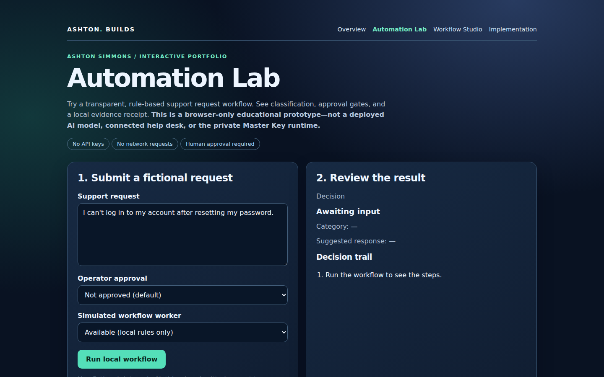
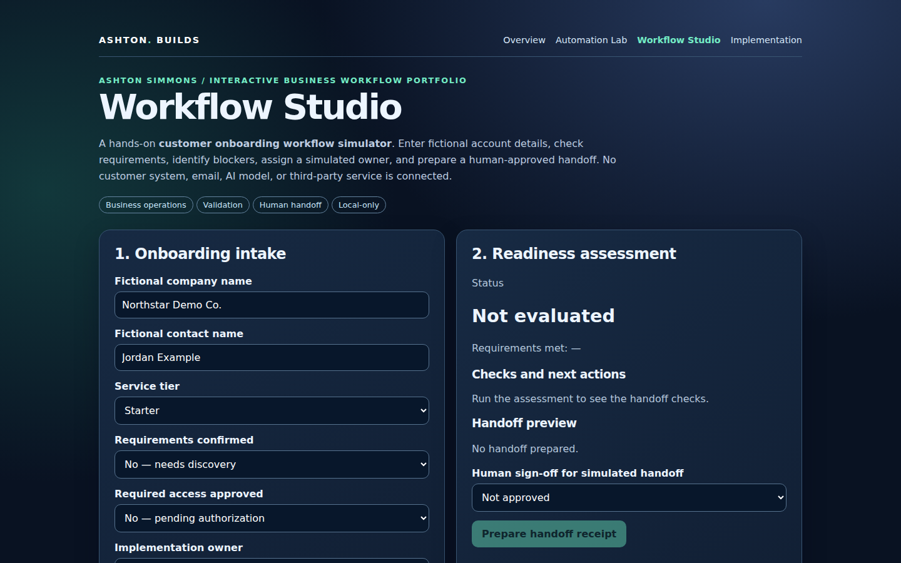
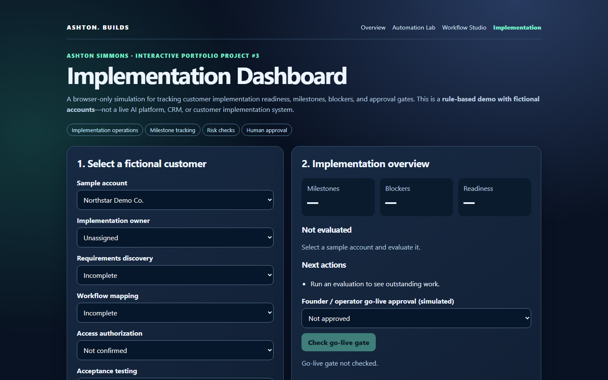

REAL BROWSER DEMOCustomer Support Automation
Classify a fictional support request, demonstrate blocked versus approved drafting, and export a local JSON receipt.
Try Automation Lab ↗I'm Ashton Simmons, an early-career AI implementation and workflow automation builder with business operations and customer-facing leadership experience. I turn messy processes into explainable, testable prototypes. Explore interactive simulations, read the technical decisions, and verify the evidence yourself.
Choose a real-world business scenario, step through a deterministic workflow, make a simulated approval decision, and download its audit trail. A safe browser-only demonstration of governed automation—not a live AI agent or production system.
Explore the boundaries between requests, workers, human approval, and evidence in a clickable, keyboard-accessible architecture atlas. A conceptual learning experience—not a live Master Key control plane.
Each demo runs locally in your browser with fictional data. These visual card previews are illustrations, not screenshots of the running applications.

REAL BROWSER DEMOClassify a fictional support request, demonstrate blocked versus approved drafting, and export a local JSON receipt.
Try Automation Lab ↗
REAL BROWSER DEMOValidate onboarding requirements, flag missing access, assign a simulated owner, and prepare a human-approved handoff receipt.
Try Workflow Studio ↗
REAL BROWSER DEMOTrack five milestones, identify blockers, assign a simulated implementation owner, and check a human go-live gate.
Try Dashboard ↗Runnable Python examples with automated checks, reproducible scenario coverage, and clearly documented limits.
Approval gates, fail-closed behavior, and deterministic evidence receipts.
Inspect governance source ↗Consent, approvals, retry recommendations, escalation, and a 24-scenario matrix.
Read the engineering case study ↗Real source, runnable examples, browser checks, and clearly stated limits. No invented uptime, customer deployments, or model integrations.
GitHub Actions captures the portfolio and three demos at two viewport sizes, checks page errors and horizontal overflow, and attaches rendered screenshots.
Inspect workflow runs ↗Explore bounded workflow examples, human approval concepts, and tests. Public educational code is separate from private MK development.
Inspect the source ↗Review the documented 24-scenario implementation matrix, retry and escalation behavior, and engineering tradeoffs.
Read the case study ↗I'm exploring early-career roles in AI implementation, workflow automation, solutions support, and technical customer success. My background combines business operations, customer communication, and hands-on technical prototyping. I care about safe handoffs, clear documentation, and making systems understandable.
Leadership and customer-facing experience informs process design, escalation, and stakeholder communication.
Explore simulated approvals, deterministic outcomes, documented scope, and public source code.
Read architecture decisions, testing evidence, and what has not been validated or deployed.
In an isolated Master Key investigation, a calibrated 66-case authorization suite reported 16 passes on an unintegrated routing candidate. The important story is the engineering response: isolate edit escalation, normalize scope, reject mixed authority, and hold integration until the security boundary qualifies. This is a documented assessment, not proof of a production-secure system.
Read the authorization regression case study ↗I'm pursuing remote, early-career opportunities in AI implementation, automation operations, solutions support, and technical customer success. I focus on understanding the process, identifying failure points, designing approval boundaries, and making results easy to explain.
Skills and career readiness ↗